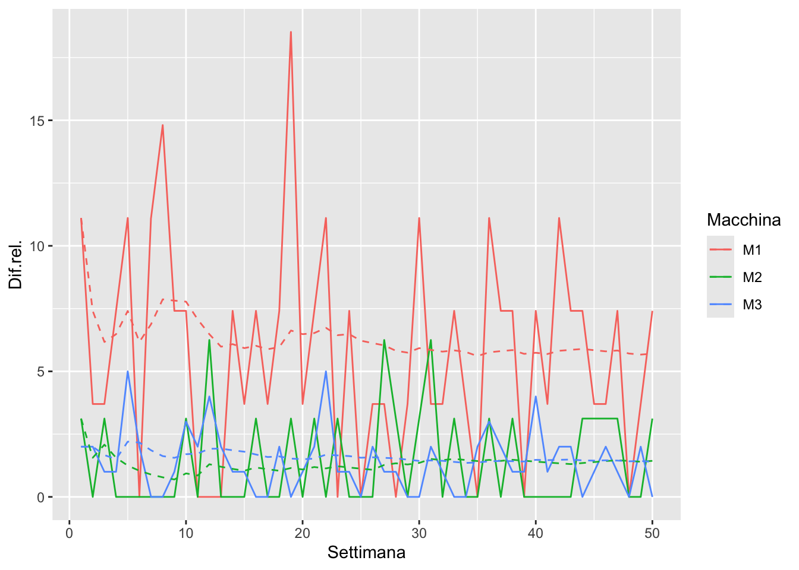
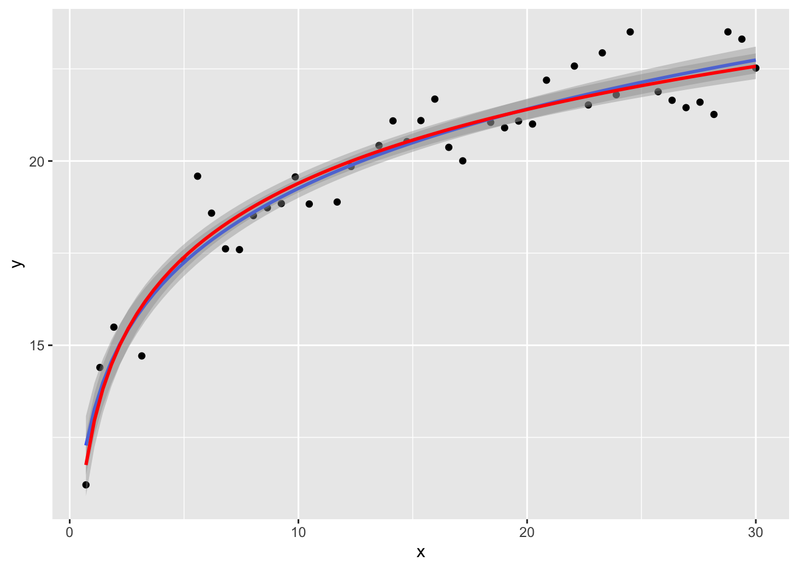

Gli esercizi sono riportati di seguito, prima elencando le domande, poi (a fine documento), gli svolgimenti. I numeri delle domande della prima sezione corrispondeono ai numeri delle risposte nella seconda.
1 Domande
1.1 Test di Student
Si hanno due campioni da 9 e 12 elementi. Il primo ha i valori 12, 11.7, 9.7, 11, 12.5, 12.7, 9.9, 11.4, 9.2; il secondo 12.5, 15.1, 14.4, 12.5, 14.9, 14.4, 13.2, 11.2, 12.6, 14.8, 13.9, 11.9. Assumendo che i campioni abbiano la stessa varianza, effettuare un test di Student a due lati senza utilizzare la funzione t.test().
1.2 Potenza del test di Student
Consideriamo il secondo campione dell’esercizio precedente. Risulta \(\bar y_2 = 13.45\). Verificare con la funzione t.test() l’ipotesi che il valore atteso della popolazione d’origine sia diverso da \(\mu_2 = 12.7\). Dato che nella fattispecie risulta \(\bar y_2 > \mu_2\), effettuare anche un test a un lato e discutere il risultato in termini di potenza del test.
Qual è il valore minimo di \(\mu_2\) che ci porta a rigettare \(H_0\) con una probabilità d’errore minore del 1%?
1.3 Manipolazione dati
Considerare il dataset ggplot2::diamonds che riporta il prezzo di vendita di diamanti in funzione delle loro caratteristiche morfologiche.
Raggruppare la dimensione in carati (carat) in cinque gruppi di caratura. Costruire una tabella che riporti, per ciascun gruppo e per ciascuna categoria di taglio (cut), il minimo, il massimo e i tre quartili del prezzo di vendita, in colonne separate.
1.4 Dati di produzione
La tabella dati prod_defects.csv sul sito http://paolobosetti.quarto.pub/data.html#list-of-csv-files contiene dei dati di difettosità (come numero difetti per settimana) su 50 settimane di un impianto di produzione con tre macchine, M1, M2 e M3. Per le tre macchine i limiti massimi di difettosità sono, rispettivamente, 27, 32 e 100.
Creare una tabella che riporti, per ognuna delle 50 settimane, la difettosità in percentuale sul massimo per ciascuna macchina e realizzare il corrispondente grafico.
Per ogni macchina, aggiungere anche il calcolo della media progressiva, cioè il valor medio dei campioni dal primo all’i-esimo.
Nota
Ricordare che tutte le tabelle presenti in http://paolobosetti.quarto.pub/data.html possono essere caricate direttamente dalle funzioni read_table() o read_csv() passando l’URL generato come adas.utils::examples_url("nome_del_file.csv").
Two Sample t-test
data: c1 and c2
t = -4.0995, df = 19, p-value = 0.0006105
alternative hypothesis: true difference in means is not equal to 0
95 percent confidence interval:
-3.516249 -1.139306
sample estimates:
mean of x mean of y
11.12222 13.45000
2.2 Potenza del test di Student
A due lati:
t.test(c2, mu=12.7)
One Sample t-test
data: c2
t = 1.9921, df = 11, p-value = 0.07177
alternative hypothesis: true mean is not equal to 12.7
95 percent confidence interval:
12.62136 14.27864
sample estimates:
mean of x
13.45
One Sample t-test
data: c2
t = 1.9921, df = 11, p-value = 0.03588
alternative hypothesis: true mean is greater than 12.7
99 percent confidence interval:
12.42668 Inf
sample estimates:
mean of x
13.45
Adottando il test a un lato, il p-value risulta inferiore. Se ci fossimo dati una soglia per la probabilità di un falso positivo pari a \(\alpha=0.05\), in particolare, nel primo caso non avremmo potuto rigettare \(H_0\), mentre nel secondo sì.
Osservando l’intervallo di confidenza al 99%, valori di \(mu_2\) inferiori a 12.4266787 consentirebbero di rifiutare l’ipotesi nulla con una probabilità d’errore inferiore all’1%.
Nota
Provare a modificare il valore del parametro conf.level e osservare come l’unico risultato nell’output di t.test() è l’ampiezza dell’intervallo di confidenza.
size:clarity: in dplyr è possibile selezionare più colonne dando un intervallo di nomi di colonne.
summarise() può dare un warning suggerendo di usare reframe: durante il corso e durante l’esame NON utilizzate reframe(), perché essendo sperimentale non ne è garantita la disponibilità sui PC usati per l’esame.
Quando le funzioni sommario utilizzate in summarise() ritornano più di un valore, il sommario riporta altrettante righe. In questo caso come sommario utilizziamo quantile(), che ritorna 5 valori, e otteniamo quindi i valori desiderati, sebbene in un’unica colonna. Aggiungiamo la colonna perc per avere le corrispondenti percentuali.
Ridistribuiamo poi i valori in colonne mediante pivot_wider().
2.4 Dati di produzione
Osserviamo il file di dati originale:
examples_url("prod_defects.csv") %>%read_file() %>%substr(1,250) %>%# solo i primi 250 carattericat()
# Difetti in produzione su 50 settimane
# S: numero settimana
# M1: conteggio difetti per macchina 1
# M2: conteggio difetti per macchina 2
# M3: conteggio difetti per macchina 3
S,M1,M2,M3
1,3,1,2
2,1,0,2
3,1,1,1
4,2,0,1
5,3,0,5
6,0,0,2
7,3,0,0
8,4,
È evidente che il file contiene dei commenti inizianti con # e che i dati non sono tidy.
Importiamo quindi la tabella e trasformiamola in formato tidy:
Rows: 50 Columns: 4
── Column specification ────────────────────────────────────────────────────────
Delimiter: ","
dbl (4): S, M1, M2, M3
ℹ Use `spec()` to retrieve the full column specification for this data.
ℹ Specify the column types or set `show_col_types = FALSE` to quiet this message.
Operare per colonne, però, non è molto pulito: supponiamo che in un futuro l’impianto cresca a 20 macchine, sarebbe necessario ripetere la stessa operazione più volte. È meglio risolvere il problema in formato tidy,
Per farlo partiamo dalla tabella tidy (prod). Non possiamo applicare direttamente una mappa, perché otterremo la media progressiva di tutti i difetti mescolando le varie macchine.
Possiamo però sfruttare group_by, che consente di operare su una tabella per gruppi:
Nonostante slice_head(n=3) otteniamo 9 righe: come mai? è dovuto al fatto che la tabella è ancora raggruppata quindi ogni operazione si applica un gruppo alla volta, ottenendo tre righe per ognuno dei tre gruppi.
Il raggruppamento può essere disabilitato con ungroup().
Ora mettiamo tutto assieme, con l’attenzione di calcolare la media progressiva per la difettosità relativa (e non per il conteggio):
prod %>%# Calcolo difettosità relativaleft_join(limits, by =join_by(Macchina)) %>%mutate(`Dif.rel.`=(Difetti/max*100) %>%round(2)) %>%# Calcolo le medie progressive per gruppigroup_by(Macchina) %>%mutate(mean =map_dbl(1:n(), ~mean(`Dif.rel.`[1:.])) ) %>%ungroup() %>%# Graficoggplot(aes(x=Settimana, color=Macchina)) +geom_line(aes(y=`Dif.rel.`)) +geom_line(aes(y=mean), linetype=2)

3 Regressione
Carichiamo i dati e dividiamoli già in due gruppi training e validation (80:20):
Confrontiamo due regressioni lineari, una col modello \(y=a + b\log(x)\), una col modello \(y=a + b/x^{0.1}\):
df %>%filter(train) %>%ggplot(aes(x=x, y=y)) +geom_point() +geom_smooth(method ="lm",formula = y ~I(x^0.1) ) +geom_smooth(method ="lm",formula = y ~log(x),color="red" )

summary(lm(y~log(x), data=df))
Call:
lm(formula = y ~ log(x), data = df)
Residuals:
Min 1Q Median 3Q Max
-1.3905 -0.5088 -0.1289 0.5283 1.8303
Coefficients:
Estimate Std. Error t value Pr(>|t|)
(Intercept) 12.78895 0.24923 51.31 <2e-16 ***
log(x) 2.88642 0.09549 30.23 <2e-16 ***
---
Signif. codes: 0 '***' 0.001 '**' 0.01 '*' 0.05 '.' 0.1 ' ' 1
Residual standard error: 0.73 on 48 degrees of freedom
Multiple R-squared: 0.9501, Adjusted R-squared: 0.949
F-statistic: 913.6 on 1 and 48 DF, p-value: < 2.2e-16
summary(lm(y~I(x^0.1), data=df))
Call:
lm(formula = y ~ I(x^0.1), data = df)
Residuals:
Min 1Q Median 3Q Max
-1.42760 -0.53774 -0.04605 0.49055 2.13253
Coefficients:
Estimate Std. Error t value Pr(>|t|)
(Intercept) -12.3808 1.0906 -11.35 3.4e-15 ***
I(x^0.1) 25.1179 0.8513 29.50 < 2e-16 ***
---
Signif. codes: 0 '***' 0.001 '**' 0.01 '*' 0.05 '.' 0.1 ' ' 1
Residual standard error: 0.7469 on 48 degrees of freedom
Multiple R-squared: 0.9477, Adjusted R-squared: 0.9467
F-statistic: 870.5 on 1 and 48 DF, p-value: < 2.2e-16
Difficile dire quale sia meglio, anche se \(R^2\) del modello logaritmico è leggermente più elevato. Proviamo con la cross-validazione, confrontando diverse potenze oltre al logaritmo:
L’ultima barra corrisponde al modello logaritmico. Si osserva che RMSE di tale modello per i dati di training e per quelli di valdazione è effettivamente il minimo, anche se l’esponente \(1/15\) produce risultati ancora migliori di \(1/10\). Tutavia, per \(n\gt10\) non si osservano sensibili miglioramenti per l’RMSE sui dati di validazione.
Osserviamo infine i residui per verificare l’assenza di pattern:
In entrambi i casi non si notano pattern significativi. Dal punto di vista fisico, è più frequente trovare relazioni logaritmiche che del tipo \(y\propto x^{0.1}\), quindi accettiamo il modello logaritmico.
Nota
Il grafico di RMSE in funzione del grado sopra riportato non mostra un minimo perché stiamo confrontando lo stesso modello con parametri (l’esponente) differenti e non diversi modelli. Quindi, il modello esponenziale non può **perdere di generalità*, cioè non rischiamo sovra-adattamento al diminuire dell’esponente.
Piuttosto, l’approccio corretto sarebbe quello di regredire anche l’esponente, trattandolo come il coefficiente di una regressione non-lineare, cioè regredire il modello \(y~a + bx^{1/c}\), dove \(c\) compare ovviamente in una relazione non lineare con gli altri coefficienti \(a\) e \(b\).
Proviamo con una regressione ai minimi quadrati inserendo anche l’esponente \(1/c\) come parametro di regressione:
f <- \(x, a, b, c) a + b*x^(1/c)df.nls <-nls(y ~f(x, a, b, c),data = df,start =list(a =1, b=1, c=2 ),trace=T)
11457.91 (1.99e+01): par = (1 1 2)
1102.181 (6.55e+00): par = (4.304996 7.951322 7.461343)
440.4336 (4.07e+00): par = (-21.86335 34.57408 20.48135)
73.30484 (1.39e+00): par = (-60.8398 73.58786 30.53211)
25.17886 (5.97e-02): par = (-68.75292 81.50195 29.32612)
25.08932 (3.82e-04): par = (-68.82486 81.57389 29.5062)
25.08932 (1.71e-06): par = (-68.83131 81.58033 29.50943)
Si noti come il valore ottimale di \(c\) risulta in effetti moto più alto:
df.nls
Nonlinear regression model
model: y ~ f(x, a, b, c)
data: df
a b c
-68.83 81.58 29.51
residual sum-of-squares: 25.09
Number of iterations to convergence: 6
Achieved convergence tolerance: 1.71e-06
Confrontando la regressione non-lineare con il modello logaritmico si osserva come stanno entrambi nella stessa banda di confidenza, quindi continuiamo a preferire il modello logaritmico: